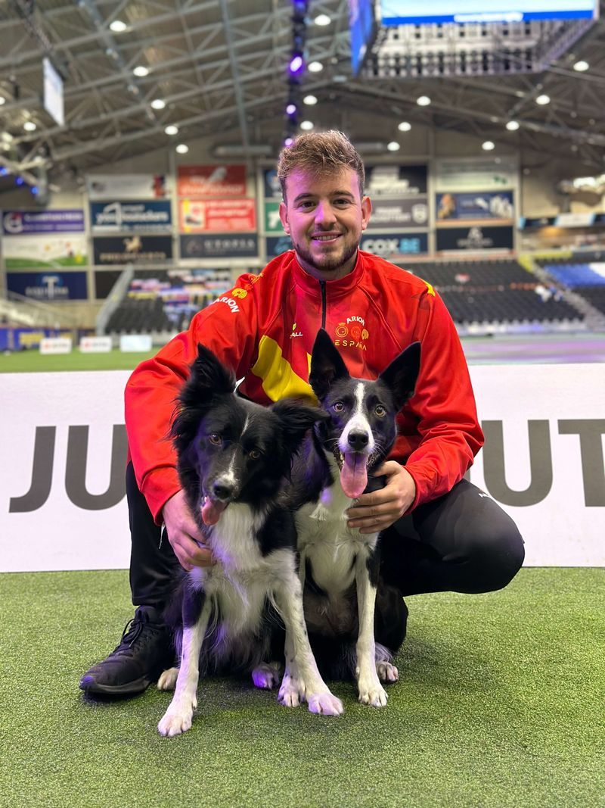

ACTIVIDADES
Competición Ecuestre
Concursos Ganaderos
Actuaciones Musicales
calendar_month
FECHAS
5 - 8 de junio 2025
Gratuita
location_on
LOCALIZACIÓN
Feria Internacional de Galicia
Abanca-Silleda (cerca de Santiago de Compostela - España)
star
ACCESO
Gratuito
Jueves y viernes: 10.00 a 20.00h
Fin de semana: 10.00 a 21.00
COLABORADORES

INVITADO

Adrián Bajo